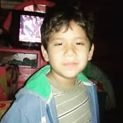

El Fútbol: Más que un Deporte, una Pasión Global
El fútbol es, sin lugar a dudas, el deporte más popular y practicado del planeta. En su esencia más pura, es un juego de equipo que enfrenta a dos conjuntos de 11 jugadores en un campo rectangular de césped, con el objetivo de introducir un balón en la portería contraria utilizando cualquier parte del cuerpo, excepto los brazos y las manos.
El único autorizado para romper esta regla es el guardameta, siempre y cuando se encuentre dentro de su área delimitada. Los partidos se dividen en dos tiempos de 45 minutos, y el ganador es aquel que logra anotar más goles.
Sin embargo, definir el fútbol únicamente a través de sus reglas técnicas sería quedarse en la superficie. La verdadera identidad de este deporte radica en su universalidad y simplicidad.
A diferencia de otras disciplinas que requieren equipamientos costosos o infraestructuras complejas, para jugar al fútbol solo se necesita un balón y algo de espacio.
Se juega en los estadios más lujosos del mundo, pero también en calles de asfalto, playas de arena y campos de tierra en los rincones más remotos de la Tierra.
A nivel social, el fútbol actúa como un poderoso conector cultural. Tiene la capacidad única de unir a personas de diferentes nacionalidades, razas y estratos sociales bajo una misma emoción.
Eventos como la Copa Mundial de la FIFA o los torneos continentales paralizan naciones enteras, generando una identidad colectiva y una lealtad que a menudo se transmite de generación en generación.
En conclusión, el fútbol es mucho más que noventa minutos persiguiendo una pelota. Es un lenguaje universal, una industria multimillonaria, un arte coreográfico sobre el césped y, por encima de todo, un motor de ilusiones que despierta pasiones inigualables en cada rincón del mundo.
